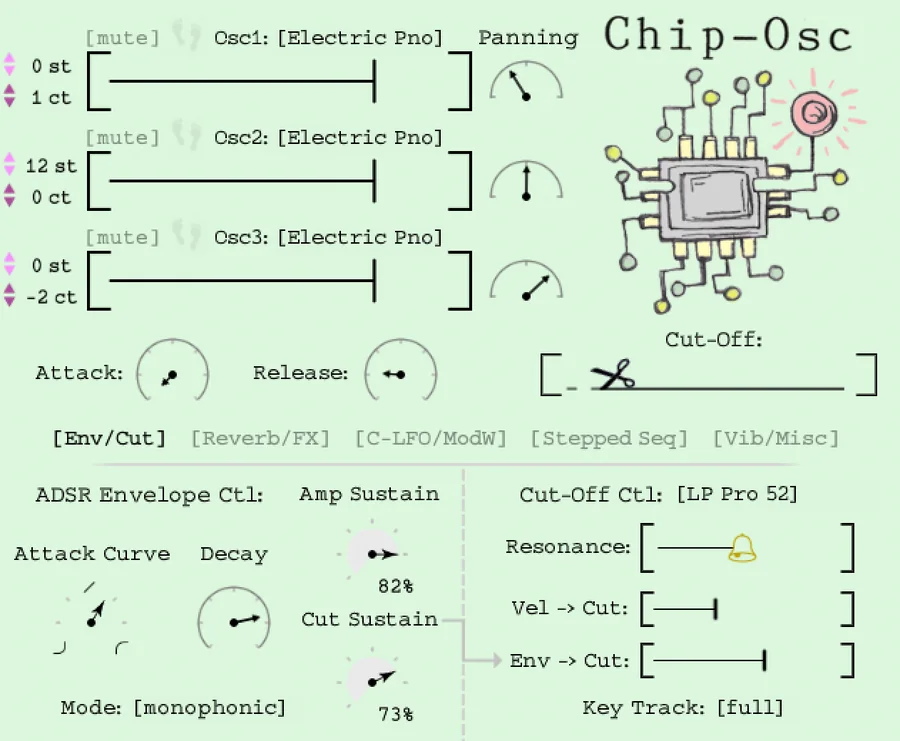

The Osc Collection · Chiptune
Chip‑Osc
A digital hybrid synth — from 8-bit to eerie.
Built from the raw oscillators of a digital hybrid synth — then wrapped in a hand-drawn interface. It ranges from classic chiptune to deep, dark cinematic soundscapes, across 81 handcrafted presets with no filler.
Or get all five in the Osc Collection — $99 · new here? try DEM-Osc free
- Runs in the free Kontakt Player
- macOS & Windows
- 81 presets, no filler

Hear it
Real sounds,
straight from Chip‑Osc.
Four presets and a full track — every sound below was made with Chip-Osc alone.
Tap a sound. It streams, nothing to download.
The thing reviewers say
It looks playful. Then you hear it.
Every knob is drawn by hand, and the sound underneath is a real digital hybrid synth, sampled shape by shape, run through real spaces.
“The sound here is serious… I really like it.”
What’s under the hood
Familiar sounds.
Refreshing interface.
- 20
Wave shapes, three at a time
Three oscillator selectors, each with 20 digital shapes from a digital hybrid synth — plus per-oscillator pitch and pan.
- 30
Convolution spaces built in
Cross-synthesis through our favorite outboard reverbs and eurorack effects — 15 reverbs and 15 FX, ready to convolve your sound.
- ↻
A stepped sequencer with a twist
It only steps when a note arrives — swapping the loaded wave shape per note to bring melodies and chords to life.
- ∿
Cut-Off LFO & a mod-wheel command center
A dedicated filter LFO with plenty of shapes, plus a control center that maps many parameters to your mod wheel at once.
- ≈
Vibrato, glide, slop & spread
Classic vibrato with speed and fade-in, plus polyphonic glide, pitch slop and pan spread to keep everything alive and human.
See it move
Watch Chip‑Osc in action.
A closer look at Chip-Osc — from chiptune leads to dark cinematic pads. Open on YouTube →
The details
Everything in the box.
Key features
- 81 handcrafted presets, no filler
- 20 digital wave shapes from a digital hybrid synth
- 30 custom impulse responses (15 reverbs + 15 eurorack FX)
- Note-triggered stepped sequencer
- Cut-Off LFO, Vibrato, Pitch Slop & polyphonic Glide
- Full NKS support — Maschine & Komplete Kontrol
Requirements
- Install & download through Native Access
- Runs in the free Kontakt 6+ Player, full Kontakt 6 & 7, Komplete Kontrol or Maschine 2
- macOS & Windows
From the studio
Loved by producers.
- ★★★★★
“The quality, sound and sheer joy these synths bring to producing music is seriously a breath of fresh air — the barn find of the decade.”
- ★★★★★
“True analog sounds. The graphics and design are top, and the presets are a great start point for sonic exploration. A work of love for sure.”
Who made it
Chip-Osc is made by Clay and Kelsy Instruments — our cute little software company. We build the instruments and the tools we need to keep producing music. Our music has been streamed over 2 million times, and our instruments downloaded over 10,000 times.
Make it yours
Get Chip‑Osc.
Or get all five — the Osc Collection for $99 (save $45). New here? DEM-Osc is free.
Do I need to own Kontakt?
No — Chip-Osc runs in the free Kontakt Player. Install it through Native Access.
What operating systems are supported?
macOS and Windows. It’s a Kontakt instrument with full NKS support for Maschine and Komplete Kontrol.
What’s inside?
Three oscillators with 20 digital wave shapes, 30 convolution spaces, a note-triggered stepped sequencer, and 81 handcrafted presets — from 8-bit chiptune to dark cinematic.